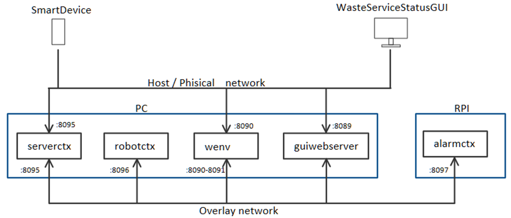

|
Loris Giannatempo 
|
Davide Guidetti 
|
Progetto finale di ISS, che consiste in un impianto di smistamento dei rifiuti nel quale un robot deve trasportare il materiale dal camion al relativo container
Allo scopo di dimostrarne il funzionamento, l'applicazione sarà distribuita fra due nodi:
Il PC:
Il Rasberry:
Per comodità il deployment viene fatto con strumenti avanzati messi a disposizione da Docker, più in particolare si fa utilizzo:
Di container. Abbiamo infatti:
Di Docker buildx, che permette di cosscompilare il container che girerà sulla Raspberry3 (ARM 64 bit). Necessario installare Qemu, e scaricare un container con Buildkit.
Di Docker compose, che permette con un unico comando di avviare e configurare più container contemporaneamente, utilizzando un file docker-compose.yml.
Di Docker swarm, un orchestratore di container (simile per certi aspetti a Kubernetes, ma più basilare) utile per automatizzare certe operazioni in un contesto distribuito come questo.
Più in particolare:
Permette di creare una Overlay network unica per l'applicazione distribuita, ossia una specie di VPN che tutti i container dell'applicazione possono utilizzare per comunicare tra di loro. Questo, combinato con la risoluzione tramite DNS (che permette di scrivere direttamente il nome del container al posto dell'indirizzo IP del nodo su cui si trova) permette di ridurre drasticamente la configurazione necessaria nel caso in cui un nodo cambi indirizzo
Possibilità di usare comandi di alto livello (docker stack deploy) per trasferire e avviare automaticamente i container sui nodi specificati nel docker-compose.yml. Purtroppo questa modalità non permette di eseguire container in modalità privilegiata (Necessario per l'utilizzo di
WiringPi sulla raspberry), quindi non ha senso utilizzare questo comando nella demo qui mostrata.
Possibilità di creare un repository locale nel quale caricare le immagini utilizzate dall'applicazione (similmente a Dockerhub), in modo che possano essere scaricate dagli altri nodi anche in assenza di una connessione internet.
Posizionarsi in ISS-Final-Proj/sprint3/docker/rpi
reset swarm, reset registry
docker swarm leave --force #on the pi too
docker-compose down
docker service rm registry
Stop e rimozione containers
docker stop $(docker ps | grep alarmctx | awk '{print $1}')
docker stop $(docker ps | grep serverctx | awk '{print $1}')
docker stop $(docker ps | grep robotctx | awk '{print $1}')
docker stop $(docker ps | grep wenvdf | awk '{print $1}')
docker stop $(docker ps | grep guiwebserver | awk '{print $1}')
docker rm $(docker ps -a | grep alarmctx | awk '{print $1}')
docker rm $(docker ps -a | grep serverctx | awk '{print $1}')
docker rm $(docker ps -a | grep robotctx | awk '{print $1}')
docker rm $(docker ps -a | grep wenvdf | awk '{print $1}')
docker rm $(docker ps -a | grep guiwebserver | awk '{print $1}')
Rimozione immagini
docker rmi -f $(docker images | grep alarmctx | awk '{print $3}')
docker rmi -f $(docker images | grep serverctx | awk '{print $3}')
docker rmi -f $(docker images | grep robotctx | awk '{print $3}')
docker rmi -f $(docker images | grep wenvdf | awk '{print $3}')
docker rmi -f $(docker images | grep guiwebserver | awk '{print $3}')
Rimozione immagine su raspberry
docker rmi $(docker images | grep alarmctx | awk '{print $3}')
Settaggio variabile IP PC:
INTERFACE="enp0s3"
IP=$(ip -f inet addr show $INTERFACE | sed -En -e 's/.*inet ([0-9.]+).*/\1/p')
echo IP="$IP" > .env
export IP
Settaggio utilizzo repository insicuro:
sudo bash -c 'echo -e "{ \n \"insecure-registries\" : [\"'$IP':5000\"] \n}" > /etc/docker/daemon.json'
sudo systemctl restart docker.service
swarm:
docker swarm init --advertise-addr $IP #do that on the pc
docker swarm join-token manager #copy the printed command on the pi
Copiare e eseguire il comando che viene restituito da docker swarm join-token manager sulla Raspberry:
la raspberry dovrebbe essere ora visibile se si effettua un docker node ls. Il nodo è un manager e non un worker siccome non ci interessa avere lo stesso container replicato su più nodi (che si fa solo per fault tollerance e load balancing)
creazione di un repository:
docker service create --name registry --network=host registry:2
compilazione e push container:
docker buildx bake -f docker-compose-rpi.yml --set=*.output=type=registry,registry.insecure=true --set *.platform=linux/arm64
docker-compose build --no-cache
Su PC:
docker-compose up --no-build
Su raspberry:
docker pull 192.168.43.169:5000/alarmctx #se non già presente in locale
docker run -i -t --rm --name alarmctx --privileged --device /dev/mem -v /proc:/proc -v /sys/firmware/devicetree/base:/sys/firmware/devicetree/base --network=rpi_wasteservicenet 192.168.43.169:5000/alarmctx
Se non si ha la Raspberry il sistema può anche eseguire in locale con un sonar e led mock (il led mock non ha tuttavia la gui essendo in un container)
Posizionarsi in ISS-Final-Proj/sprint3/docker/lcoal
Vedi: cleanup
Su PC:
docker-compose up
La richiesta può essere fatta per mezzo di uno script python eseguibile con jupyter:
cd ../../resources/python/
jupyter notebook
|
Loris Giannatempo
|
Davide Guidetti
|